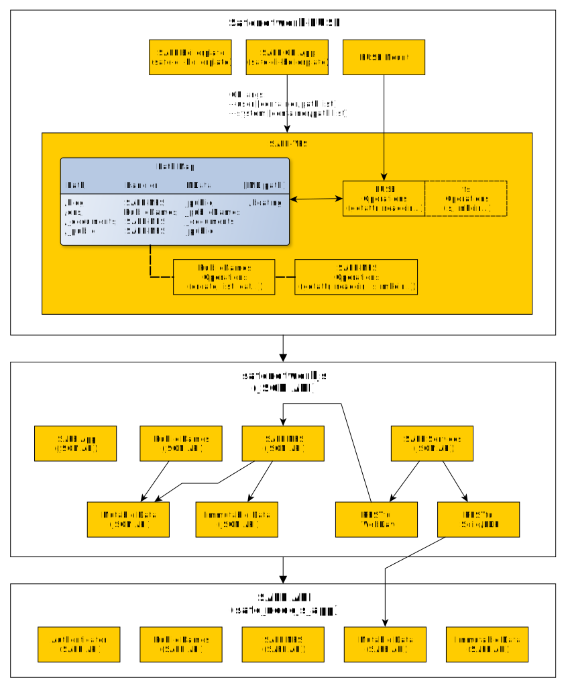

Created Thursday 21 June 2018
Architecture

Diagram Source (yED): ./diagrams/SAFE-FUSE-High-Level-Design-Architecture.graphml
Safenetwork-FUSE
Safenetwork-FUSE is a command line program which can be packaged for Windows, MacOS and Linux. It comprises:
- SAFE CLI App (from safe-cli-boilerplate) for CLI argument handling
- SAFE Bootstrap (from safe-cli-boilerplate) for SAFE authentication via Peruse Browser
- FUSE Mount (using fuse-bindings npm module) implementing FUSE Operations (see safenetwork-fuse/safe-fuse/<fuse-operation>.js)
- SAFE-VFS (see next)
SAFE-VFS
SAFE-VFS is a class which manages a Path Map of mounted paths, handlers and mounted resources (probably mounted lazily on access, and cached).
The Path Map is constructed based on command line parameters and defaults such as:
Adds containers present in a comma separated list to the map, along with the corresponding handler. If no list is provided, all *available* system containers are mounted. Valid container names are: _documents, _public, _music, _video, and _publicNames, though not all will be available.
Each mount-list item adds a Path Map entry corresponding to a mount Path relative to the system mount point (e.g. /blog mounts as ~SAFE/blog) and a SAFE NFS path within the _public container (e.g. _public/boating). If the SAFE NFS path does not exist an attempt to mount it will fail.
SAFE-VFS Handlers:
Handlers are provided for each fundamentally different SAFE API, as follows:
- SAFE-NFS Operations (class SafeNfsOps) provides an implementation for each supported FUSE operation for the system containers (_public, _documents etc) and their contents (i.e. SAFE NFS compatible Mutable Data and Immutable Data). The behaviour of these file system operations is straightforward in principle, but will have to handle unsupported or incompatible features as sensibly and intuitively as possible. For example, file metadata such as ownership and permissions will differ across operating systems, and SAFE NFS.
- PublicNames Operations (class PublicNamesOps) provides an implementation for each supported FUSE operation appropriate to the _publicNames container and its contents. The behaviour of file-system operations on this non-filesystem is not obvious, but will aim to be intuitive and capable. For example, listing of _publicNames container, can list each public name, but perhaps with a special character decoration to show that each name is not a file or folder (maybe they all appear inside single quotes?). Also, certain directory might be permitted on a public name. A listing could list the services on each name. A directory listing of a service, could then go futher. Similarly, it would be useful to be able to create public names and services using the filesystem CLI, as illustrated by the now defunct virtual drive implementation created by @loureirorg on alpha1 (see this post for CLI examples there, including the use of 'ln -s public/my-dir dns/my-app/www' to add a www service to the public name my-app which serves the content of public/my-dir).
In the diagram, fs Operations (dashed line box) is included to suggest how SAFE-VFS could be modified to provide a NodeJS fs compatible module for use in other applications.
SAFE VFS Notes:
1) SAFE NFS directories: a SAFE NFS path can be created on a mounted SAFE drive in the _public container, by creating a file on that path. For example, if Safenetwork-FUSE is mounted as ~/SAFE and _public is present at ~/SAFE/_public you could create _public/boating/ as an SAFE NFS container by one of the following:
Currently, SAFE NFS does not support empty directories within a system container (such as _public) so you cannot create a directory with mkdir even though I think this is expected behaviour. We may therefore add support for it with (or perhaps without) a change to the conventions for SAFE NFS.
2) Permissions: for now maximum permissions are requested at the Safenetwork-fuse level regardless of CLI parameters. Later a permissions parameter may be supported and requested at authentication, and a corresponding value added to each entry in the map.
3) Future: In future the handlers could be extended to provide a filesystem interface to a user profile / WebID attached to a public name, or new handlers added for Mutable and Immutable Data types, giving access to an object via its xor address for example.
_immutable/<xor-sddress> - access or create raw data
_uri/<uri> - an alternative route to access public information about public names and services. This might list services on a given public name (eg happybeing), or a specific service if explicit (eg www.happybeing) as a way to list services owned by others.
safenetworkjs
safenetworkjs is a NodeJs module which provides a simplified interface to the SAFE API based on JSON parameters, but extended to allow RESTful services within web and desktop applications, similar to the safenetwork-webapi module which was created to demostrate integration with Solid web apps.
Example services are included to illustrate how these may be implemented using either the safenetworkjs JSON API (as with RESTful WedDav) or the SAFE API directly (as with RESTful Solid/LDP). The latter anticipates the introduction of a RDF based API for Mutable Data within safe_nodejs_app as the official SAFE API is enhanced to support Solid WebID and Linked Data/RDF.